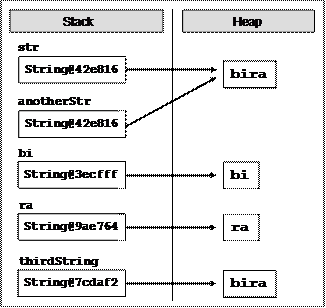

Глава 5. Условни конструкции
Автор
Марин Георгиев
В тази тема...
В настоящата тема ще разгледаме условните конструкции в Java, чрез които можем да изпълняваме различни действия в зависимост от някакво условие. Ще обясним синтаксиса на условните оператори: if и if-else с подходящи примери и ще разясним практическото приложение на оператора за избор switch.
Ще обърнем внимание на добрите практики, които е нужно да бъдат следвани, с цел постигане на по-добър стил на програмиране при използването на вложени и други видове условни конструкции.
Оператори за сравнение и булеви изрази
В следващата секция ще опишем операторите за сравнение в езика Java. Те са важни, тъй като чрез тях можем да описваме условия при използване на условни конструкции.
Оператори за сравнение
В тази секция ще бъдат разгледани шест оператора за сравнение: <, <=, >, >=, == и !=. Операторите за сравнение винаги дават като резултат булева величина (true или false).
Java има няколко оператора за сравнение, които могат да бъдат използвани за сравняване на всяка комбинация от цели числа, числа с плаваща запетая или символи:
|
Оператор |
Действие |
|
== |
равно |
|
!= |
различно |
|
> |
по-голямо |
|
>= |
по-голямо или равно |
|
< |
по-малко |
|
<= |
по-малко или равно |
Нека погледнем към следните сравнения:
|
int weight = 700; System.out.println(weight >= 500);
char sex = 'm'; System.out.println(sex <= 'f');
double colorWaveLength = 1.630; System.out.println(colorWaveLength > 1.621); |
В дадения програмен код използваме сравнение между числа и между символи. При сравнението на символи се сравнява тяхната лексикографска наредба (сравняват се Unicode номерата на съответните символи). Стартирайки примера ще получим следния резултат:
|
true false true |
В Java има четири различни типа данни, които могат да бъдат сравнявани:
- Числа (int, long, float, double, …)
- Символи (char)
- Булеви стойности (boolean)
- Референции към обекти, познати още като обектни указатели (String, Object и други)
Всяко едно сравнение може да засегне две числа (включително char), две boolean стойности, или две референции към обекти. По принцип не е забранено да се сравнява символ с число, но това не се препоръчва, защото води до труден за четене и разбиране код.
Сравнение на цели числа и символи
Програмният код по-долу представя някои тестове за сравняване на числа и символи:
|
System.out.println("char 'a' == 'a'? " + ('a' == 'a')); System.out.println("char 'a' == 'b'? " + ('a' == 'b')); System.out.println("5 != 6? " + (5 != 6)); System.out.println("5.0 == 5L? " + (5.0 == 5L)); System.out.println("true == false? " + (true == false)); |
Този програмен код извежда следния резултат:
|
char 'a' == 'a'? true char 'a' == 'b'? false 5 != 6? true 5.0 == 5L? true true == false? false |
Сравнение на реални типове
Както можем да забележим, ако число с плаваща запетая се сравнява с цяло число, и стойностите и на двете са едни и същи, операторът == връща true (истина), както се и очаква. Това, обаче не винаги работи коректно. Ето един любопитен пример:
|
float value = 1.0f; System.out.println(value); float sum = 0.1f + 0.1f + 0.1f + 0.1f + 0.1f + 0.1f + 0.1f + 0.1f + 0.1f + 0.1f; System.out.println(sum); System.out.println(sum == value); |
Резултатът от изпълнение на горния код е абсолютно неочакван:
|
1.0 1.0000001 false |
Оказва се, сумата от 10 пъти 1/10 не е равно на 1. При работата с реални числа не всяко число има точно представяне в типовете float и double и поради закръглянето се получават грешки. По тази причина често пъти сравнението на реални числа се прави с някаква точност, например 0.000001. Счита се, че две реални числа са равни, ако имат много малка разлика по абсолютна стойност. Ето пример за сравнение на реални числи с точност:
|
float value = 1.0f; float sum = 0.1f + 0.1f + 0.1f + 0.1f + 0.1f + 0.1f + 0.1f + 0.1f + 0.1f + 0.1f; System.out.println("Exact compare: " + (sum==value)); System.out.println("Rounded compare: " + (Math.abs(sum-value) < 0.000001)); |
Резултатът от горния код показва, че сравнението с точност работи по-добре при реални числа, отколкото точното сравнение:
|
Exact compare: false Rounded compare: true |
Сравнение на референции към обекти
Два указателя към обекти (референции) могат да сочат към един и същи обект. Това е показано в следния програмен код:
|
String str = "Some text"; String anotherStr = str; |
След изпълнението на този код, двете променливи str и anotherStr ще сочат към един и същи обект (обект String със стойност "Some text").
Променливите от тип референция към обект могат да бъдат проверени, дали сочат към един и същ обект, посредством оператора за сравнение ==. Този оператор не сравнява съдържанието на обектите, а само дали се намират на едно и също място в паметта, т. е. дали са един и също обект. За променливи от тип обект, не са приложими сравненията по големина (<, >, <= и >=).
За да разберем разликата между сравнение на референции към обекти (адреси на обекти в паметта) и сравнение на стойности на обекти, нека следния програмен код:
|
String str = "bira"; String anotherStr = str; String bi = "bi"; String ra = "ra"; String thirdStr = bi + ra;
System.out.println("str = " + str); System.out.println("anotherStr = " + anotherStr); System.out.println("thirdStr = " + thirdStr); System.out.println(str == anotherStr); System.out.println(str == thirdStr); |
Ако изпълним примера, ще получим следния резултат:
|
str = bira anotherStr = bira thirdStr = bira true false |
В примера се създават три променливи, които съдържат една и съща стойност "bira". Първите две от тях са референции към един и същ обект в паметта, т.е. са еднакви указатели (адреси в паметта). Третият обект, обаче, се намира на друго място в паметта, макар че има същата стойност като другите два. За да си представите визуално това ще ви помогне фигурата:

Повече за класа String и за сравняването на символните низове ще научите в главата "Символни низове".
Логически оператори
В настоящата секция ще разгледаме логическите оператори за сравнение. Те биват шест вида: &, |, ^, !, && и ||.
Логически оператори && и ||
Тези логически оператори се използват само върху boolean стойност. За да бъде резултатът от сравняването на два израза с оператор && true (истина), то и двата операнда трябва да имат стойност true. Например:
|
if ((2 < 3) && (3 < 4)) {
} |
Този израз е истина, когато и двата операнда: (2 < 3) и (3 < 4) са true. Логическият оператор && се нарича още и съкратен оператор, тъй като той не губи време за допълнителни изчисления. Той изчислява лявата част на израза (първи операнд) и ако резултатът е false, то операторът && не губи време за изчисляването на втория операнд, тъй като е невъзможно крайният резултат да е "истина", ако и двата операнда не са "истина". По тази причина той се нарича още съкратен логически оператор "и". Ето един пример:
|
class Logical { public static void main(String[] args) { boolean b = true && false; System.out.println("b = " + b); } } |
Когато изпълним предходния програмен код, получаваме като резултат:
|
b = false |
Операторът || е подобен на && с тази разлика, че той следи поне един от изчисляваните операнди да е "истина". Той се нарича още съкратен логически оператор "или", тъй като ако изчисляването на първия операнд се свежда до "истина", не губи време за изчисление на втория операнд, защото резултатът във всички случаи ще бъде "истина".
Ако при изчислението се получи така, че и двата операнда се свеждат до "лъжа", то крайният резултат от сравнението ще бъде "лъжа".
Логически оператори & и |
Операторите за сравнение & и | са подобни, съответно на && и ||. Разликата се състои във факта, че се изчисляват и двата операнда един след друг, независимо от това, че крайния резултат е предварително ясен. Затова и тези оператори за сравнение се наричат още несъкратени логически оператори.
Например, когато се сравняват два операнда със & и първият операнд се сведе до "лъжа" въпреки това се продължава с изчисляването на вторият операнд. Резултатът е ясно, че ще бъде сведен до "лъжа". По същия начин, когато се сравняват два операнда със | и първия операнд се сведе до "истина", независимо от това се продължава с изчисляването на втория операнд и резултатът въпреки всичко се свежда до "истина".
Логически оператори ^ и !
Операторът ^, известен още като изключващо ИЛИ (XOR), се прилага само върху булеви стойности. Той се причислява към несъкратените оператори, поради факта, че изчислява и двата операнда един след друг. Резултатът от прилагането на оператора е истина, когато само и точно един от операндите е истина, но не и двата едновременно. В противен случай резултатът е лъжа. Ето един пример:
|
System.out.println("Изключващо ИЛИ: " + ((2<3) ^ (4>3))); |
Резултатът е следният:
|
Изключващо ИЛИ: false |
Предходният израз е сведен до лъжа, защото и двата операнда: (2 < 3) и (4 > 3) са истина.
Операторът ! връща като резултат противоположната стойност на булевия израз, към който е приложен. Пример:
|
boolean value = ! (7 == 5); // true |
Горният израз може да бъде прочетен, като "обратното на истинността на израза 7 == 5". Резултатът от примера е true (обратното на false).
Побитови операции върху цели числа
Три от логическите оператори, споменати по-горе могат да оперират не само върху булеви изрази, но и върху числови стойности. В този случай те се използват за извършване на побитови операции върху цели числа. Това са операторите: &, | и ^. Нека разгледаме следния програмен код:
|
byte b1 = 6 & 5; // 00000110 & 00000101 = 00000100 byte b2 = 7 | 9; // 00000111 | 00001001 = 00001111 byte b3 = 5 ^ 4; // 00000101 ^ 00000100 = 00000001 System.out.println(b1 + " " + b2 + " " + b3); |
Резултатът от изпълнението му е:
|
4 15 1 |
Побитовите оператори сравняват две променливи бит по бит (в тяхното двоично представяне като поредици от нули и единици) и връщат като резултат променлива, чийто битове се получават по следния начин:
- При сравняване с побитовия оператор &: текущо върнатият бит е "вдигнат" или 1 когато и двата текущо сравнявани бита на двете променливи са 1).
- При сравняване с побитовия оператор |: текущо върнатият бит е "вдигнат" или 1 когато единия или и двата текущо сравнявани бита на двете променливи е 1).
- При сравняване с побитовия оператор ^: текущо върнатият бит е "вдигнат" или 1 когато точно единия от двата текущо сравнявани бита на двете променливи е 1).
Условни конструкции if и if-else
Условните конструкции if и if-else представляват тип условен контрол, чрез който вашата програма може да се държи различно, в зависимост от приложения условен тест.
Условна конструкция if
Основният формат на условната конструкция if е, както следва:
|
if (булев израз) { тяло на условната конструкция } |
Форматът включва: if-клауза, булев израз и тяло на условната конструкция.
Булевият израз може да бъде променлива от булев тип, булев логически израз или релационен израз. Булевият израз не може да бъде цяло число.
Тялото е онази част, заключена между големите къдрави скоби: {}. То може да се състои от един или няколко оператора. Когато се състои от няколко оператора, говорим за съставен блоков оператор. Също така в тялото могат да бъдат включвани една или няколко конструкции.
Изразът в скобите трябва да бъде сведен до булева стойност true или false. Ако изразът бъде изчислен до стойност true, тогава се изпълнява тялото на условната конструкция. Ако пък от друга страна, резултатът от изчислението на булевия израз е false, то операторите в тялото няма да бъдат изпълнени.
Условна конструкция if – пример
Пример за условна конструкция if:
|
public static void main(String[] args) { Scanner input = new Scanner(System.in); System.out.println("Enter two numbers."); int firstNumber = input.nextInt(); int secondNumber = input.nextInt(); int biggerNumber = firstNumber; if (secondNumber > firstNumber) { biggerNumber = secondNumber; } System.out.printf("The bigger number is: %d%n", biggerNumber); } |
Конструкцията if и къдравите скоби
При наличието на само един оператор в тялото на if-конструкцията, къдравите скоби, обозначаващи тялото на условния оператор могат да бъдат изпуснати, както е показано по-долу. Добра практика е, обаче те да бъдат поставяни, дори при наличието на само един оператор. Целта е програмния код да бъде по-четим.
|
int a = 6; if (a > 5) System.out.println("Променливата а е по-голяма от 5."); System.out.println("Този код винаги ще се изпълни!"); // Bad practice: unreadable code. |
В горния пример кодът е форматиран заблуждаващо и създава впечатление, че и двете печатания по конзолата се отнасят за тялото на if блока, а всъщност това е вярно само за първия от тях.
|
|
Винаги слагайте къдрави скоби { } за тялото на if блоковете дори ако то се състои само от един оператор! |
Условна конструкция if-else
Основният формат на условната конструкция if-else е, както следва:
|
if (булев израз) { тяло на условната конструкция } else { тяло на else-конструкция } |
Форматът включва: запазена дума if, булев израз, тяло на условната конструкция, запазена дума else, тяло на else-конструкция. Тялото на else-конструкцията може да се състои от един или няколко оператора.
Изчислява се изразът в скобите (булевият израз). Резултатът от изчислението може да бъде сведен до true или false. В зависимост от резултата са възможни два пътя, по които да продължи потока от изчисления. Ако булевият израз се сведе до true, то се изпълнява тялото на условната конструкция, а тялото на else-конструкцията се пропуска и операторите в него не се изпълняват. От друга страна, ако булевият израз се сведе до false, то се изпълнява тялото на else-конструкцията, а тялото на условната конструкция се пропуска и операторите в него не се изпълняват.
Условна конструкция if-else – пример
Нека разгледаме следния програмен код:
|
x = 3; if (x > 3) { System.out.println("x е по-голямо от 3"); } else { System.out.println("x не е по-голямо от 3"); } |
Програмният код може да бъде интерпретиран по следния начин: Ако x>3, то резултатът на изхода е: "x е по-голямо от 3", иначе (else) резултатът е: "x не е по-голямо от 3". В случая, понеже x=3, след изчислението на булевия израз ще бъде изпълнен операторът от else-конструкцията. Резултатът от примера е:
|
x не е по-голямо от 3 |
Вложени if конструкции
Понякога е нужно програмната логика в дадена програма или приложение да бъде представена посредством if-конструкции, които се съдържат една в друга. Наричаме ги вложени if или if-else конструкции.
Влагане наричаме поставянето на if или if-else клауза в друга if или else конструкция. Всяка else клауза се отнася за най-близко разположената предходна if клауза. По този начин разбираме коя else клауза към коя if клауза се отнася.
Не е добра практика нивото на влагане да бъде повече от три, тоест не трябва да бъдат влагани повече от три условни конструкции една в друга.
Ако поради една или друга причина се наложи да бъде направено влагане на повече от три конструкции, то трябва да се търси проблем в архитектурата на създаваната програма или приложение.
Вложени if конструкции – пример
Пример за употреба на вложени if конструкции:
|
Scanner input = new Scanner(System.in); System.out.println( "Please enter two numbers (on separate lines)."); int first = input.nextInt(); int second = input.nextInt(); if (first == second) { System.out.println("These two numbers are equal."); } else { if (first > second) { System.out.println("The first number is greater."); } else { System.out.println("The second number is greater."); } } |
В примера се въвеждат две числа и се сравняват на две стъпки: първо се сравняват дали са равни и ако не са, се сравняват отново, за да се установи кое от числата е по-голямо. Ето примерен резултат от работата на горния код:
|
Please enter two numbers (on separate lines). 2 4 The second number is greater. |
Вложени if конструкции – добри практики
Подходи, които е препоръчително да бъдат следвани при писането на вложени if конструкции:
- Използвайте блокове, заградени с къдрави скоби { } с цел избягване на двусмислие;
- Използвайте else клауза след всяка if клауза, когато е възможно;
- Поставяйте условните ситуации, които желаете да бъдат изпълнени първи на първо място;
- Форматирайте винаги програмния код, с цел да бъде лесно четим и да не позволява двусмислие;
- По-добре е използването на switch-case конструкция вместо вложени if конструкции, когато това е възможно;
Условна конструкция switch-case
В следващата секция ще бъде разгледана условната конструкция switch за избор измежду списък от възможности.
Как работи switch-case конструкцията?
Конструкцията switch прави избор измежду части от програмен код на базата на изчислената стойност на определен целочислен израз (целочислен селектор). Форматът на конструкцията за избор на вариант е:
|
switch (целочислен селектор) { case целочислена-стойност-1: конструкция; break; case целочислена-стойност-2: конструкция; break; case целочислена-стойност-3: конструкция; break; case целочислена-стойност-4: конструкция; break; // … default: конструкция; } |
Целочисленият селектор е израз, даващ като резултат целочислена стойност. Операторът switch сравнява резултата от целочисления селектор с всяка една целочислена стойност (етикет). Ако се открие съвпадение, се изпълнява съответната конструкция (проста или съставна). Ако не се открие съвпадение, се изпълнява default конструкцията. Стойността на целочисления израз трябва задължително да бъде изчислена преди да се сравнява с целочислените стойности вътре в switch конструкцията.
Виждаме, че в горната дефиниция всеки case завършва с break, което води до преход към края на тялото на switch. Това е стандартният начин за изграждане на switch конструкция, но break е незадължителна клауза. Ако липсва, кодът след case конструкцията, при която е срещнато съвпадение между стойността на селектора и на етикета, ще се изпълни и след това ще бъдат изпълнени конструкциите на другите case-оператори надолу, независимо че стойностите на техните етикети не биха съвпаднали със стойността на селектора. Това продължава докато бъде достигната break клауза след някоя case конструкция. Ако такава не бъде достигната, изпълнението ще продължи до достигане на края на switch.
От дадената дефиниция на конструкцията switch забелязваме, че след конструкцията на default липсва break. Това няма значение, защото в случая след default конструкцията няма други case конструкции за изпълнение, а се бележи края на тялото на switch. Програмистът може да постави след default конструкцията break, ако това е важно за добрия стил или за потока на изчисленията. Трябва да се има предвид, че не е задължително default конструкцията да е на последно място, тя може да бъде поставена някъде във вътрешността на switch конструкцията.
Правила за израза в switch
Конструкцията switch е един ясен начин за имплементиране на избор между множество варианти (тоест, избор между няколко различни пътища за изпълнение). Тя изисква селектор, който се изчислява до цяло число от типа int, byte, char или enum. Ако искаме да използваме, например, низ или число с плаваща запетая като селектор, това няма да работи в switch конструкция. За нецелочислени типове данни трябва да използваме последователност от if конструкции.
Използване на множество етикети
Използването на множество етикети е удачно, когато искаме да бъде изпълнена една и съща конструкция в повече от един случай. Нека разгледаме следния пример:
|
int number = 6; switch (number) { case 1: case 4: case 6: case 8: case 10: System.out.println("Числото не е просто!"); break; case 2: case 3: case 5: case 7: System.out.println("Числото е просто!"); break; default: System.out.println("Не знам какво е това число!"); } |
В този пример е имплементирано използването на множество етикети чрез написването на case конструкции без break след тях, така че в случая първо ще се изчисли целочислената стойност на селектора – тук тя е 6, и след това тази стойност ще започне да се сравнява с всяка една целочислена стойност в case конструкциите. Въпреки, че ще бъде срещнато съвпадение със стойността на селектора и третата case конструкция, изпълнението ще продължи надолу до срещането на първия break.
Резултатът от предходния програмен код е:
|
Числото не е просто |
Добри практики при използване на switch-case
- Добра практика при използването на конструкцията за избор на вариант switch е default конструкцията да бъде поставяна на последно място, с цел програмния код да бъде по-лесно четим.
- Важно е да се използват отделни case конструкции за обработка на различни ситуации.
- Добре е на първо място да бъдат поставяни онези case конструкции, които обработват най-често възникващите ситуации. case конструкциите, които обработват ситуации, възникващи по-рядко могат да бъдат поставени на последно място.
- Добре е case конструкциите да бъдат подреждани в азбучен ред, ако целочислените стойности, с които се сравнява селекторът, са от символен тип.
- Добре е case конструкциите да бъдат подреждани в нарастващ ред, ако целочислените стойности, с които се сравнява селекторът, са от целочислен тип.
- Добре е да се използва default конструкция за ситуации, които не могат да бъдат обработени при нормално изпълнение на програмата.
Упражнения
1. Да се напише if-конструкция, която изчислява стойността на две целочислени променливи и разменя техните стойности, ако стойността на първата променлива е по-голяма от втората.
2. Напишете програма, която показва знака (+ или -) от частното на две реални числа, без да го пресмята.
3. Напишете програма, която намира най-голямото по стойност число, измежду три дадени числа.
4. Напишете програма, която за дадена цифра (0-9), зададена като вход, извежда името на цифрата на български език.
5. Напишете програма, която при въвеждане на коефициентите (a, b и c) на квадратно уравнение: , изчислява и извежда неговите реални корени.
6. Напишете програма, която намира най-голямото по стойност число измежду дадени 5 числа.
7. Дадени са няколко цели числа. Напишете програма, която намира онези подмножества от тях, които имат сума 0. Примери:
- Ако са дадени числата {-2, -1, 1}, сумата на -1 и 1 е 0.
- Ако са дадени числата {3, 1, -7}, няма подмножества със сума 0.
8. Напишете програма, която прилага бонус точки към дадени точки в интервала [1..9] чрез прилагане на следните правила:
- Ако точките са между 1 и 3, програмата ги умножава по 10.
- Ако точките са между 4 и 6, ги умножава по 100.
- Ако точките са между 7 и 9, ги умножава по 1000.
- Ако точките са 0 или повече от 9, се отпечатва съобщение за грешка.
9. Напишете програма, която преобразува дадено число в интервала [0..999] в текст, съответстващ на българското произношение. Примери:
- 0 "Нула"
- 273 "Двеста седемдесет и три"
- 400 "Четиристотин"
- 501 "Петстотин и едно"
- 711 "Седемстотин и единадесет"
Решения и упътвания
1. Погледнете секцията за if конструкции.
2. Трябва да използвате последователност от if конструкции.
3. Трябва да използвате вложени if конструкции.
4. Трябва да използвате switch конструкция.
5. От математиката е известно, че едно квадратно уравнение може да има един или два реални корена или въобще да няма реални корени. За изчисляване на реалните корени на дадено квадратно уравнение първо се намира стойността на дискриминантата (D) по следната формула: . Ако стойността на дискриминантата е нула, то квадратното уравнение има един двоен реален корен. Той се изчислява по следната формула: . Ако стойността на дискриминантата е положително число, то уравнението има два различни реални корени, които се изчисляват по следната формула: . Ако стойността на дискриминантата е отрицателно число, то квадратното уравнение няма реални корени.
6. Използвайте вложени if конструкции. Можете да използвате конструкцията за цикъл for, за която можете да прочетете в Интернет.
7. Използвайте вложени if конструкции.
8. Използвайте switch конструкция и накрая изведете като резултат на конзолата пресметнатата точка.
9. Използвайте вложени switch конструкции. Да се обърне внимание на числата от 0 до 19 и на онези, чиито единици е нула.